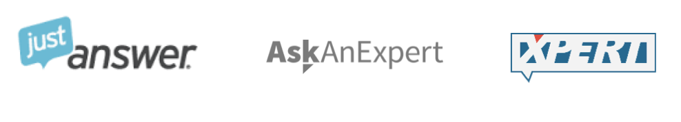
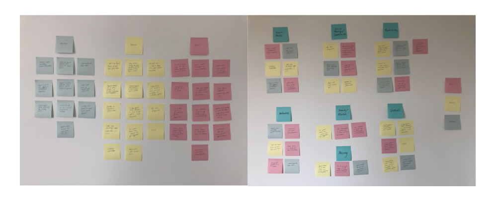
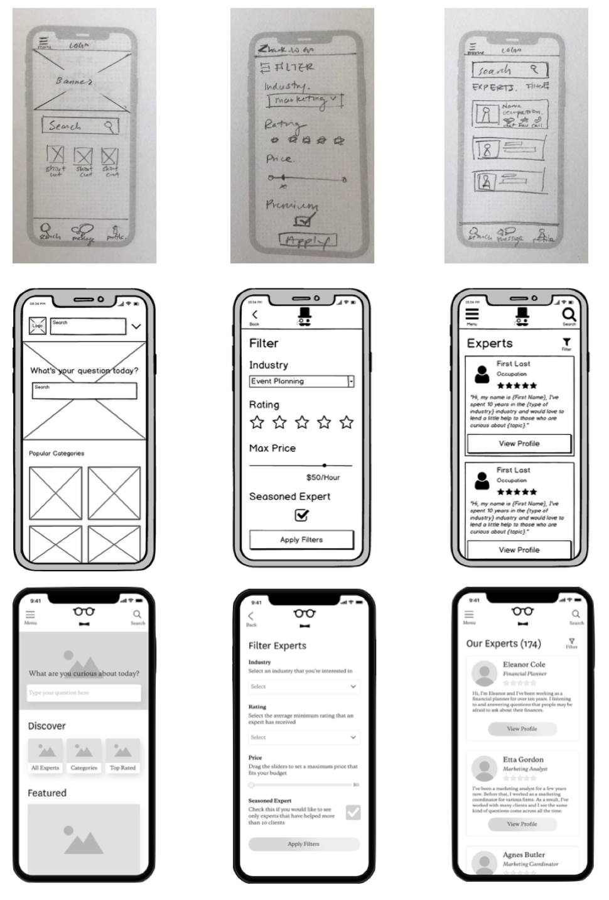
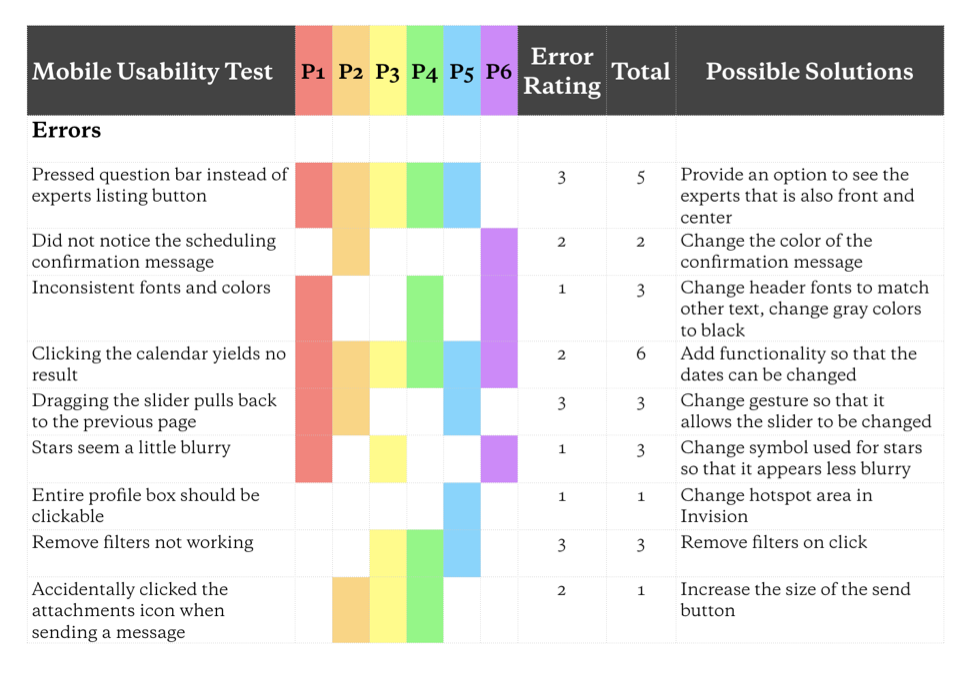
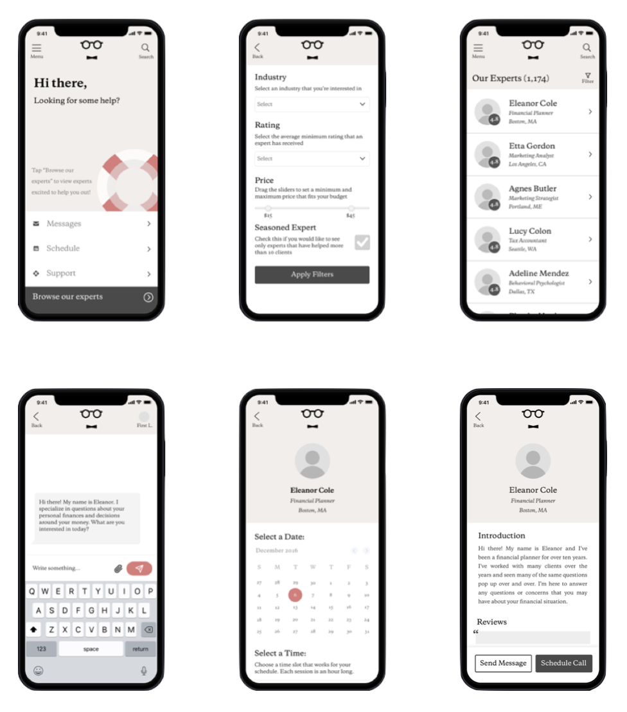
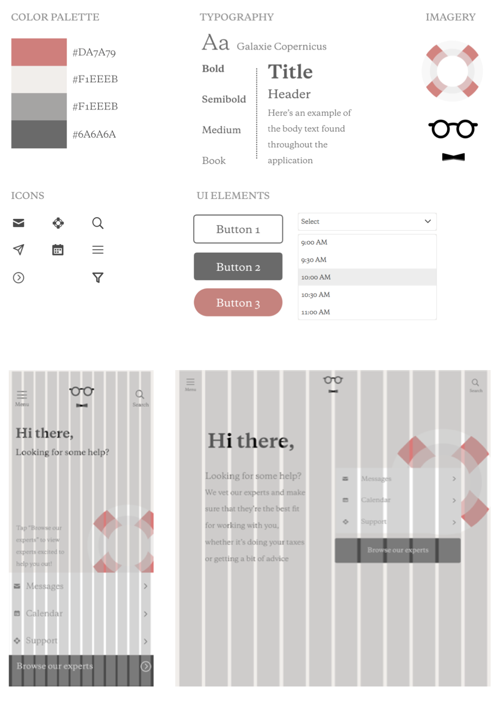

Monocle.
Introduction
Monocle is a web application that helps users find an expert that he or she is able to have a conversation with or consult without the limitations of a physical office of meeting. Users can send messages, schedule calls, and browse a database of vetted experts that through the application.
Context
The expert-finding application was the overarching project for the UX Immersive portion of the CareerFoundry program. The objective was to learn the process that UX designers typically go through and the fundamentals of conducting research and testing. The course itself introduces concepts through readings and examples, then assigns a task to practice the skill or process. These skills ranged from interviewing to wire framing and prototyping.
Problem
As more and more information is made more readily available to us, it becomes harder to find the right advice from the right person.
Solution
Monocle is an web application that helps users find an expert that he or she is able to have a conversation with or consult without the limitations of a physical office or meeting. Users can send messages, schedule calls, and browse a database of vetted experts through the application.
Research
Introduction
The project started with a competitive analysis that looked at what made the application differentiated or successful, as well as the general usability, navigation, and layout of the site. Generally, it was found that these applications tended to target older adults, often with more complex UI and without elements to make the platform more friendly and easy-to-use.
Surveys & Interviews
To gather more insights into the needs and wants of a potential user, short surveys were sent out and qualitative interviews were conducted. In general, users said that they haven’t typically sought advice online but could think of instance when it would have been helpful. Several mentioned getting in touch with their parents for questions about taxes, others saw the platform having potential in the legal field or the medical field. To distill the information, I used affinity mapping to group and clarify the overarching themes. All in all, it was most important to them that the experts were properly vetted and the platform was simple and easy to use.
Design
Low/Mid/High Fidelity Prototyping
From the research that was conducted, I sketched out various low-fidelity frames that emphasized simplicity and an intuitive/familiar interface. Once these were finalized, they were recreated in Balsamiq and then Sketch for user testing.
User Research
High fidelity wireframes were imported into Invision and tested with six different users. The errors were rated based on severity and the number of users that brought up the error.
Finalizing the Design
Usability errors in the high-fidelity prototype were addressed and additional comments about the lack of color, confusing homepage, and “lack of friendliness” were addressed with a new color palette and another version of the homepage.
Design Documentation
Upon finalization of the design, I was then able to create documentaiton around the use of color, typography, and other UI elements.
Wrapping Up
What I Learned
Throughout the project, I learned that it was vital to make sure that I received high quality and actionable feedback. It was also important to schedule these sessions well in advance to avoid any bottlenecks from a lack of sample size. This would contribute directly to how fast I could prototype and continue reiterating to achieve the most desirable and consistent end product.
Next Steps
Continued testing to solicit feedback from users about the new features that were bucketed as “nice-to-haves” instead of “needs” will be important. Further design and iterations will ensure a consistent look, feel, and operation through the entirety of the application.